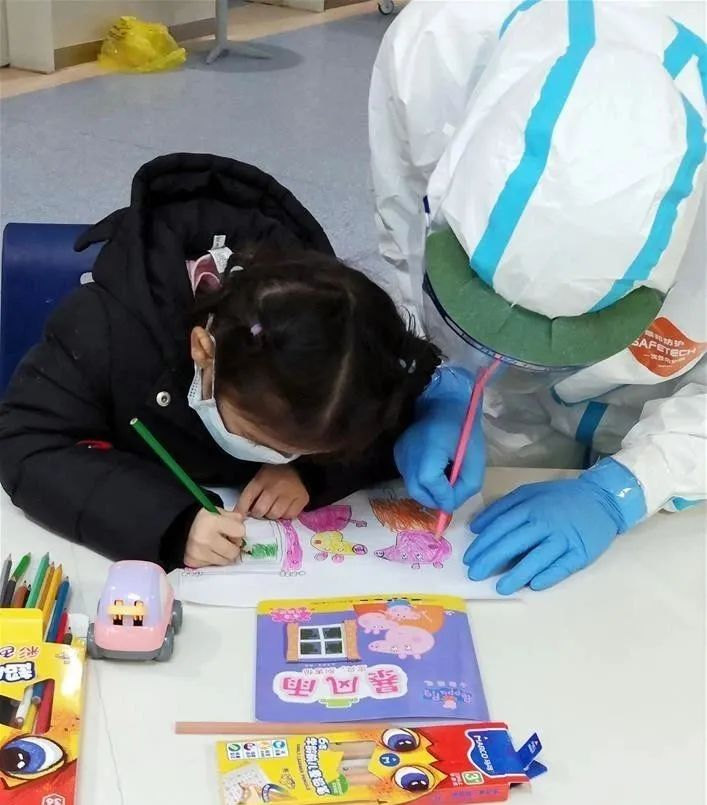
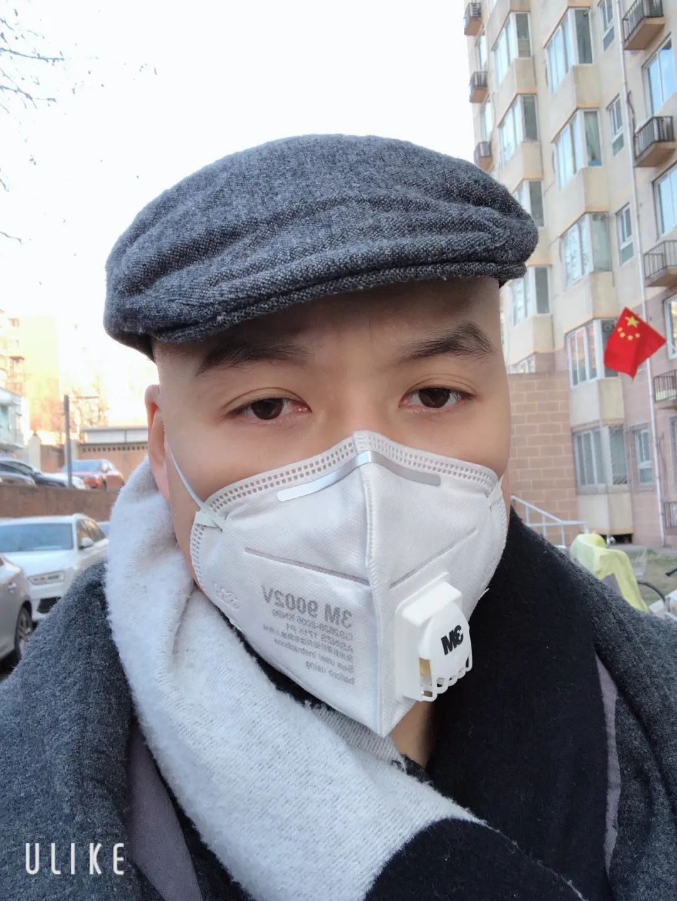
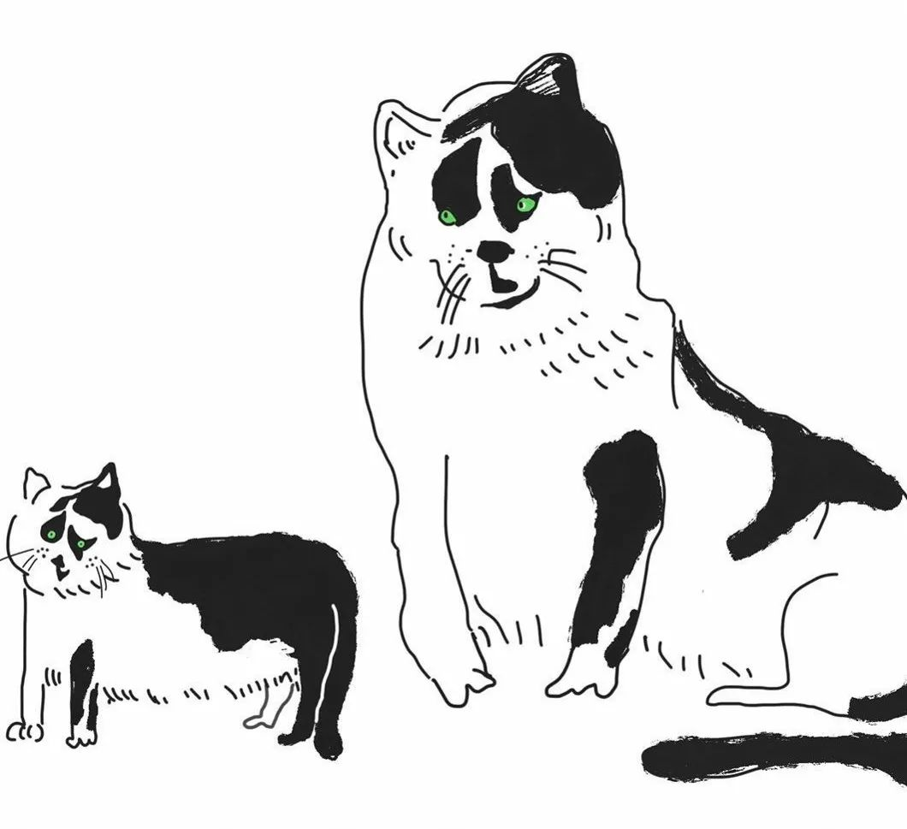
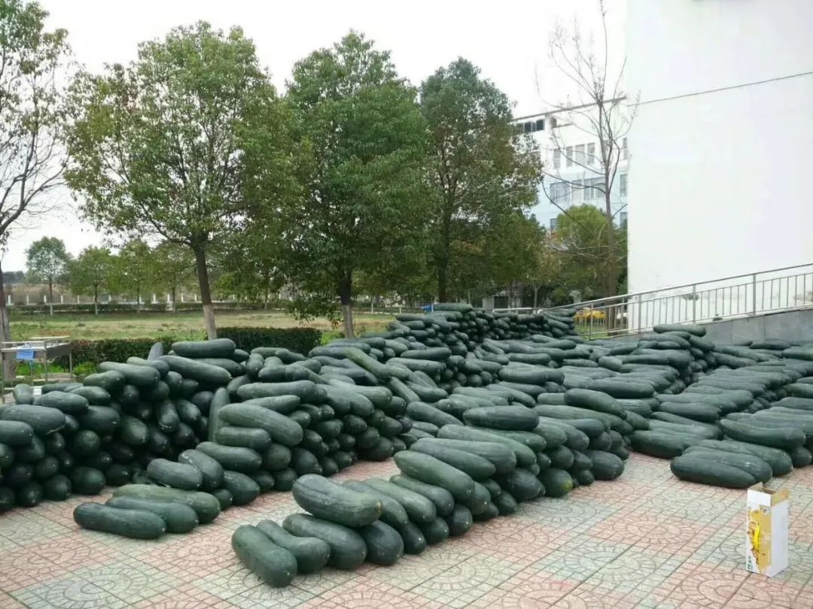
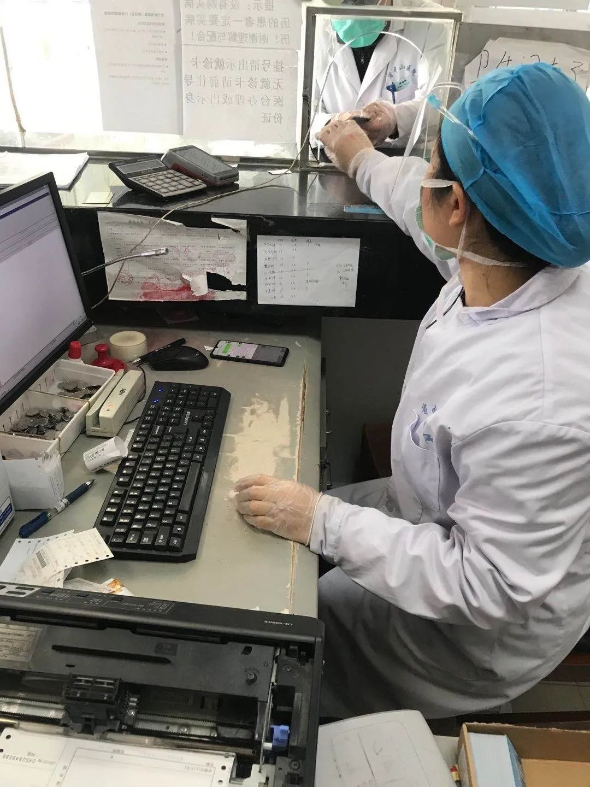

号外｜武汉封城后的24小时
原文链接 备份链接 本文由娱志The Review原创出品 华东师范大学传播学院学生娱评号 转载需申请授权 作者 | Moe，苏博 编辑 | 华实 导语 “自2020年1月23日10时起，全市城市公交、地铁、轮渡、长途客运暂停运营；无特殊 …
在所有人为物资、床位、治疗，为疫情防控和复工等议题奔忙时，一位艺术家倡导，每个外地人用自己的方式，找到和认识一个武汉朋友。“每天和他聊天，给予对方关怀和慰藉。”“认识一个武汉朋友”计划如星星点灯般，一天之内聚集了上千参与者
本文首发于南方人物周刊
文 | 本刊记者 邓郁
实习记者 刘睿睿 刘佳薇
编辑 | 周建平 rwzkjpz@163.com
全文约6240，细读大约需要14分钟

2月28日，在武汉儿童医院内科楼18楼病区，护士杨柳陪一名小朋友画小猪佩奇 图 / 新华社
认识一个武汉朋友

微信确认“添加好友”，道声“你好”。再确认，再问候。
从2月3日下午4点开始，24小时里，这个动作林子重复了至少1140遍。
彼时，全国新增病例达到当时的历史最高点；湖北问责处理了三名省红会干部；李兰娟团队表示发现了抑制病毒的新药……而在绝大多数人赖以为信息平台的微博上，充满层出不穷的求助案例、道听途说的疫情消息、此消彼长的指责和谩骂。
“我女朋友常常会因为这些信息而焦灼、愤怒，甚至流泪。我在想自己能做点什么。”待在北京的艺术家林子隐隐感到，也许有一些信息被夸大或扭曲了。为何不让一个隔离区外的人，和一个武汉市民在微信上结成好友，关心彼此，分享自己的见闻和情感？“聊天记录可以被二次传播或至少留作历史的证据，为未来的展示提供可能。”
林子把这个艺术项目命名为“认识一个武汉朋友”计划（以下简称“朋友计划”），制作了一张说明图片，在朋友圈发出。
半小时后，参与人数便呈井喷状态，到2月4日下午参与者累计超过1140人。为了便于大家联系，林子和女友一共建了九个微信群。“疫情线上交友俱乐部+论坛”1.0版由此诞生。

“认识一个武汉朋友”计划发起人林子 图 / 林子
按照林子的想法，朋友计划两端应该连接的是“在隔离区内但与疫情无（直接）关（系）的人”与“隔离区外与疫情无关的人”。
小小激动的寒暄之后，热心人在群里抛出了患者求助信息填写表；有人表示愿意分享线上心理义诊资源；还有占卜师介绍静坐冥思方法、“为灾区祈福”的佛经音乐和法事。
瑞德西韦试验究竟有没有用，也成了大家关心的问题。
总有人质疑新药试验是“拿人体当试验，不人道”，群成员、在上海药企做临床监察员的小王有点看不下去了，在群里科普：“我们一般试验入组要入两年的，瑞德西韦三期入组九天就入了75%了，他们试验方案是对照组四盲的。对照组也是用药的，大家都有得救治。”小王的日常工作是做类似糖尿病等慢病的临床研究，需要经常去医院做患者访视，算是经验之谈。“病人需要签知情同意。会给他们买保险。如果有什么问题，先停药，用保险支付补偿。”
在参与者曹夕看来，那会儿的计划群就像外界对武汉印象的一个小小缩影，慌乱匆忙，但好歹（问题）还在一个个解决。
共享信息、科普之外，群里的一些老摇滚迷开始怀念SMZB和达达乐队（均为成立于武汉的乐队），还有人提到Vox（武汉酒吧）组了个民间救援队伍，“算是很早很早的救援队了。”
“东湖也很美！”“我也想去！”“疫情之后约起来吧。”
“话题是不是跑偏了？不是该讨论疫情吗？”有人又把线给拽回来。
“这些还只是群里的杂谈。要实现一对一的交流，需要迈出决定性的一步。就像一群人来到舞会上，你还是要找到自己的那个舞伴。”群成员文杰说。
“疫情不是生活的全部”
广东女孩珂琪找到的“舞伴”，是在武汉念书的一位孝感姑娘。
珂琪没有照微信名字称呼她，自始至终就叫她“小姐妹”。而当我联系到孝感姑娘后，后者笑着让我直呼她“肥肥”。

珂琪 图 / 受访者提供
在珂琪眼里，肥肥爽直、性子急，像另一个自己。“她在武汉读书，好不容易回到孝感，她爸妈也不让她出门，她都快憋坏了。群里聊起朋克之都武汉时，她就是最活跃的，是一个很爱玩的女生呵。”
爱玩的肥肥1月22日夜里刷手机，看到网上有人说封城，立马起来收拾东西，凌晨两点半，居然叫到了一部滴滴去火车站。“对方说平时这个点我不会接单的，但是今天要去高铁站接朋友，顺便就接一个吧。也真是幸运哦。”
她笑说自己不是怕病毒才连夜回老家。“我是怕我自己在那边（武汉）没钱吃饭饿死耶。对我这个吃货来说这更糟糕。在家里不用操心，有零食。在武汉每天还得管家里要钱，水深火热。”
1月23日，清晨的武汉笼罩在一片迷雾里。高铁上的肥肥看着窗外，想起了黑压压的电影《釜山行》。“心里很惆怅，但又相信肯定有阳光照耀的一天。”
见到风尘仆仆的女儿，妈妈的第一反应是，“吓死了。”“她是怕我带病回来。‘你一个人也就罢了，家里还有你妹妹呢，’怕啥，我就待自己房间里头。”
爸爸长年在深圳工作，一年顶多回家一次。肥肥告诉我，爸爸从来不懂照顾人，更不用说嘘寒问暖。这个年，钝感的老爸知道关心人了，全家四口也是头一回聚在一起给她过生日。
肥肥觉得，珂琪发的朋友圈和自己蛮像的。“她很乐观、‘沙雕’，不像别人钻牛角尖，老是发一些居高临下的观点。那种太苕（蠢）了，什么都去批评。但珂琪，就很像你现实中的朋友。”
“你有没有好奇过，她长什么样，高矮胖瘦？”
“那种感觉来了，和高矮胖瘦没关系，很舒服。”肥肥干脆地回复。“而且有一天，你去到各个城市，哇，都还有我的朋友，大家都是兄弟姐妹，这太爽了。”
珂琪被肥肥的这份生猛和热络打动。电话那头，她的声线比肥肥要略为沉稳些。从小到大，珂琪热心为孤儿院、老人院服务的志愿活动，素来关注社会议题。
看到肥肥常常爆出一句，“哇，我要憋出精神病来啦！”珂琪忍不住笑她，“想进那儿（精神病院），可没那么容易。”

珂琪家附近的小区，她觉得层层叠叠的标语很有意思
图 / 珂琪
研究生毕业前，珂琪因为读书压力太大、对自己能力产生怀疑、实习阶段被工作机构“压榨”，她的情绪到了临界点。
几天前，珂琪还在广东老家看心理医生。每每想到武汉、湖北那些没找到病床的病人，支离破碎的家庭，冒着风险在一线工作的医护人员、工人，她就无法自抑。
“医生跟我说，你除了关心他们，也要多关注自己。”
认识肥肥之后，两人不太聊疫情。肥肥直言自己是个玻璃心的人，实在没有办法承受太多。“大家都知道形势很严峻。如果事情发生在我（和家人）身上，该我当勇士，就不能逃跑。但当我可以躲避的时候，我不想别人逼我去面对。”
就在加入朋友计划的前夜，肥肥蜷缩在床上，就着一壶老酒，看了一场“卧室POGO线上云音乐节”。直播时一发弹幕，她又认识了一两个好友。两个小时里，她们各种滋哇尖叫，“沦陷”在共同喜爱的乐队里。
“没毛病。”珂琪很能理解小姐妹的这种“狂欢”。“没必要那么沉重”。
她俩不算摇滚乐的拍档，但聊起抖音上的小怪兽绘画，话就挡不住。珂琪在微信上直接涂抹几笔，发自己的作品给肥肥看。“我们还会讨论朋友在网上遇到的渣男这种话题。其实这样更真实，虽然疫情真的在发生，但它并不是生活的全部。”

有轻微洁癖的珂琪，去年“双十一”期间就囤了很多消毒液和湿巾 图 / 珂琪
“不那么完美的对象”
自媒体编辑曹夕是最认真对待的参与者之一，她找到的武汉人叫小武，在位于光谷产业园的一家大型企业任工程师。由于产业特殊，无法停产，过年至今，小武就没有出过工厂一步。

光谷大道的夜晚 图 / 小武
1月底前回到老家的员工都在隔离中，没法到岗。剩下三分之一的留守员工压力陡增。以前大约一两个月上一回夜班，一次十天。疫情期间，小武已经上了两轮夜班——每次从晚上8点半上到第二天早上8点半。从办公室到公司安排的临时宿舍之间，徒步20分钟。下班时天已大亮，上班时寂静清冷。
小武给曹夕发光谷一带街道的照片，介绍公司发的口罩。发得最多的还是食堂的午餐图。“挺难吃的。我们开玩笑说，天天吃牢饭，呵呵。”吃货小武以前每周必到市区探店，火锅、烤串不间断，最近只能让胃受委屈。

小武公司的盒饭，他说食之无味。据说最近有了改进
图 / 小武
夜里待在办公室，空调却被关了。小武说，一线工人工作更累，危险更大。二线人员在办公室里，业务量不饱和时，常常也就是刷手机度日。去年下半年才入职的他理解公司的难处，也没有和工厂叫板的能力。
认识小武的第三天，中午12点醒来，曹夕看到小武给她发的信息，“他们隔壁厂有人被确诊。其实1月的时候就有疑似感染了，其间救护车来了很多趟。”
小武所在的厂区离那家工厂相隔一公里，中间有条铁路隔开，封闭管理下问题应该不大。但小武心里还是紧巴巴的。“厂子附近一个社区的确诊人数，就几乎赶上省外某些城市的数量了。”他告诉曹夕。

1月21号，小武回老家黄冈，当时的武汉站还没几个人戴口罩 图 / 小武
小武不善言辞，被问到什么，嘴里就蹦出几个字。“就记得，群里最热闹的，除了建群时，就是李文亮去世那天夜里了。大家聊到凌晨4点。”
小武羡慕文科出身的，把媒体从业者叫作“文艺工作者”。他觉得自己对曹夕和群里其他人来说，或许都称不上一个“理想的聊天对象”。除了工厂和附近地带，他掌握的有关武汉疫区的信息，不见得比外省的人多。
但在曹夕这儿，小武就是一扇实实在在的小窗，“他就是另外一个层面上的普通的武汉人。”


曹夕和小武常常交流各自的涂鸦。左边是曹夕画的两只猫，小武称赞“有细节”；右边是小武画的猫，曹夕赞其“有灵魂”
“此后如竟没有炬火，我便是唯一的光”
曹夕也试着打开其他的窗，比如微博上认识的大学生小象。
之所以去微博上找，是因为计划群里的武汉朋友并不多，曹夕想避免和其他外地人“撞友”。几乎在同一个时间点，林子也觉得群聊这种形式背离了初衷，他号召大家采用“去中心化”的各种方式，比如发动周围朋友来介绍武汉的朋友。加上有些激进的言论他也无法把控，于是1140人的群聊群主和管理权，都被林子转让给了群里的朋友。
小象家在距离汉口火车站七八十公里的新洲区，父母都在医院工作。爸爸所在的骨科最近关门了，母亲在医院的收费室加班。这个寒假除了忙论文，她偶尔也去医院给母亲帮忙。“据说后来也做了定点医院，有病人转过来。但数量不多。”

外界捐赠给小象妈妈所在医院的冬瓜
1月初，小象留意到香港对市民的提示，自己囤了几百个口罩。“看她的微博，那时她家人和朋友都有点嘲笑她过于紧张，少见多怪，后来都被‘打了脸’。”曹夕说。
小象很喜欢路上遇到的稀奇古怪的人：头皮屑掉渣但是对她笑、给她分橘子吃的陌生流浪汉，或是候车厅坐她对面的一群盲人，都会让她有凝视和攀谈的冲动。
她教微博上的新冠肺炎患者在线填写信息填报系统，鼓励有资源的人直接去和求助的当事人取得联系。但她也比以往更强烈地感到所有人都被一层“厚厚的罩子”笼罩着。“时常觉得自己有很多话，说不出来，对谁都是。鼓胀起来，渴望表达，又渴望毁灭。”
让曹夕觉得小象有些与众不同的，正是这个女孩对“更大的世界”永不枯竭的热心与追问。“她绝大部分时间都在转发各种消息，记录自己在围城里的感受。似乎现在不做点什么，以后一定会忘记。”
不光自己转发，小象还会去追问关注的一些大V，是否会转发自己@他们的消息。“有的人答应我，会接着我转。有的人就不理了。”她会去研究如何转发更加有效。“上百万（粉丝）级的大V够不着，人家也不太会转发普通患者的求助信息，多半是捐款捐物吧。一般最有效的就是转发给10-20万的大V。”
黄冈有一个癫痫患者疫情期间发作，因为封路得不到救治。家属发信息求助无果。小象他们想联系，然而患者家庭已经删掉了信息。她心里像被锯子锯了一般难受。另一个刚上初一的武汉小男孩，从小父母离异后把他扔给奶奶。奶奶疑似新冠肺炎后没法住院，小男孩无奈下只能发微博。听到有志愿者联系上社区、“男孩和奶奶都得到照顾”的消息，小象难得地高兴了一把。
小象也怀疑过自己是不是太容易躁怒。看到欣赏的一个有50万粉丝的情感博主和她一样，对求助者感同身受，和她一样容易生气，她就觉得好多了，“有受到鼓舞。”
“愿中国青年都摆脱冷气，只是向上走，不必听自暴自弃者流的话，能做事的做事，能发声的发声。有一分热，发一分光，就令萤火一般，也可以在黑暗里发一点光。不必等候炬火，此后如竟没有炬火，我便是唯一的光。”鲁迅的这番话，她在疫情时期重新发出来。
虽然只和小象有过一次深谈便再无交集，但这不影响曹夕对这个硬气又脆弱的女生的欣赏，“这个年纪，有这份血性，挺好。”

疫情期间，小象的妈妈在武汉新洲区一家医院收费处坚持工作。小象感觉，最近医院的医患关系有明显好转
对这个以交友为目的的计划活动，小象不以为意。“他们想和武汉人发展温情友好的关系。我想的是，你有精力嗨聊，不如做些更直接的事。”
其实，计划实施过程里，早有人问起过林子：你们在这里讨论这些有的没的，为什么不去帮助那些需要帮助的人？
“这是一个很好的问题。”林子本人也曾穷尽一切力量，去帮助一个因全家感染而求助的武汉体大女生，却发现自己推动不了一丝一毫。“我意识到，在我们想做的和我们能做的事之间，有一条无法逾越的鸿沟。于是我的回答就是：让武汉内外素昧平生的人们在这个时候认识彼此，聊聊有的没的，就是提供我们力所能及的帮助。
在这个人人隔离的时期，聊天本身就已经是很大的慰藉了。这会让人觉得生活还有它正常的一面，生活除了疫情还有吃喝玩乐，还有感情和娱乐，人的尊严我觉得也就在这里了。”

“朋友计划”群成员童童从京都发来的图片，商店里限定一人一次只能买一份口罩 图 / 童童
接力
和小武、小象比起来，群里的小刘离“风暴中心”要更近一点。
2020年元旦，在家中摔了一跤的小刘，夜里去挂武大中南医院的急诊，额头缝了三针。
因为是深夜，来去匆忙，他没有留意太多。后来几天，他去家附近的诊所换药，直到2月13日再去中南拆线，“好像都挺‘正常’。地铁上戴口罩的人也不多。”
本职做医疗器械，在看外伤前，小刘就接到过业内朋友有关不明肺炎的消息。出于职业敏感，他在网上买了50个医用口罩。“当时还买一送一，非常便宜。”
1月20日，小刘买了两瓶酒精，带着一点家里的口罩，从汉口火车站坐高铁回了老家十堰。待在老家的这一个多月里，各种假想和后悔如藤蔓一般缠绕着他，到最后几成梦魇。

几年前冬日，小刘在武汉的家，窗外风景。平时楼下的学校总有很多人在操场活动，现在一片萧条 图 / 小刘
1月初的10天里，每天都去人流量不小的三甲医院和诊所；拆线时，中南医院已经改造出传染病房；离开武汉时，经过的是位于交通枢纽的车站——这当中的每一步，都存在“中招”几率。在十堰，他一度每天看新闻发布会，研究媒体拟出的疫情发展时间线。质疑过自己，该不该回来？
他坚持每天在家量体温。成年人了，又干这行，身体状况自己有数，但还是没法释怀。“想想我算是武汉戴口罩比较早的那一批人。但你不可能开会、吃饭都戴吧。如果正好有那么一个人（感染），食堂里，地铁里……”
在家的日子，小刘看书、写代码，生计问题也不容乐观。以前有业务往来的各大医院，如今都只顾得上和呼吸科、发热门诊有关的器械交易。小刘所在的公司，业务暂时停摆。“朋友有一家公司，搞软件开发的。放假放着放着，倒闭了。”
还好，总有些人事可以分散注意力。
年三十之前，他回到村子里爷爷家。近处是自家的青菜和橘子林，远处山丘连绵，冬日里略显萧瑟，但也还透着几许绿意。爷爷家的杂院和厨房里各放着一副寿器，那是年过古稀的老人们十年前就备好的。“爷爷奶奶身体都很硬朗，对生死也早看开了。（疫情）这事儿，他们有些吃惊，说从记事起没见过这么大的‘瘟疫’。对我倒也没嘱咐太多，就说还是晚点回武汉吧。”
进入朋友计划群后，他注意到临床专业背景的小王。两人一个着重生物，一个着迷化学和药理，专业上谈得颇为投机。
小王依稀记得，小刘提过自己受伤去医院的事。“但他也没说太细，我只是隐隐觉得，他心里好像装着什么事儿。说不太好。”
对小刘而言，不论和计划群里的朋友有“几面之缘”，都是艰难时日里特别需要的一份慰藉。他更希望，自己仍在武汉市区里的朋友和同事也能得到这样的安慰和帮助。
发起人林子向我坦承，朋友计划“远没有它看上去那么好”：武汉本地的参与者远远少于外地的参与者，聊天对象比例严重失衡；他也没有精力去一一统计，有多少对群友私下成功结识。“更何况，人和人的交流本身就是一件很困难的事情，在陌生人之间发生有效的交流更是困难。”

武汉策展人葛伟小区门口堆放的食品，由小区采购员帮助采买 图 / 葛伟
群里一位武汉籍的艺术策展人葛伟建议，聊得好的朋友们可以适当分享和发布聊天记录，让这个项目往下延伸。葛伟还记得，群里面曾有人约着，有一天疫情结束，大家分省骑自行车接力骑到武汉，“他们说最后大旗传到武汉长江边——我觉得挺好的。每个省市的人都在为着我们更好的生活、更好的状态去努力。”
本为自己的“半途消隐”感到抱歉，听到上述提议，林子又生出些欣慰。“希望有缘人能把这个计划继续下去。”一想到武汉的情况可能发生在任何一个城市，他更觉得这种点对点的关怀应该成为一种常态——让身处困境里的人打破信息瓶颈，不再孤独。
（参考资料：跳海大院公号文《我参与了“认识一个武汉朋友”计划》，感谢所有受访者。文中所有人名皆为化名。）
战“疫”专题：


点击“阅读原文”即可订阅和购买最新杂志
原文链接 备份链接 本文由娱志The Review原创出品 华东师范大学传播学院学生娱评号 转载需申请授权 作者 | Moe，苏博 编辑 | 华实 导语 “自2020年1月23日10时起，全市城市公交、地铁、轮渡、长途客运暂停运营；无特殊 …
原文链接 备份链接 新冠疫情是一场全球灾难，也是各国公共卫生的练兵场。 按照世界卫生组织专家、伦敦卫生和热带医学院流行病专家戴维 · 海曼（David Heymann）教授的观点，阻止新冠病毒传播的更重要的因素是一个国家医疗保健体系的实 …
原文链接 备份链接 非常时期，武汉成了全国人民挂念、祈福的城市。封城后，武汉人民的真实生活是什么样？随着抗“疫”有条不紊的进行，武汉发生了哪些变化？还存在哪些问题？ 正和岛自1月26日起特别推出“叶青专栏”。叶青是一位定居武汉40年的市 …
原文链接 备份链接 联合调查组认为，“黄某英事件”虽然发生在武汉女子监狱，但根源在湖北省司法厅和湖北省监狱局 《财经》综合报道 仅用5天时间，感染新冠肺炎的刑满释放人员黄某英，如何在层层封锁之下从武汉回到北京？3月2日，司法部牵头，会同中 …
原文链接 备份链接 - 这是 新世相 的第1201 篇文章 - Sayings: 两周前，我曾问：你见过凌晨四点的武汉吗，是什么样？ 之后，我们收到了接近 2000 个人的讲述，包括 150多个在武汉的人。他们的故事，构成了今天这条推送的 …